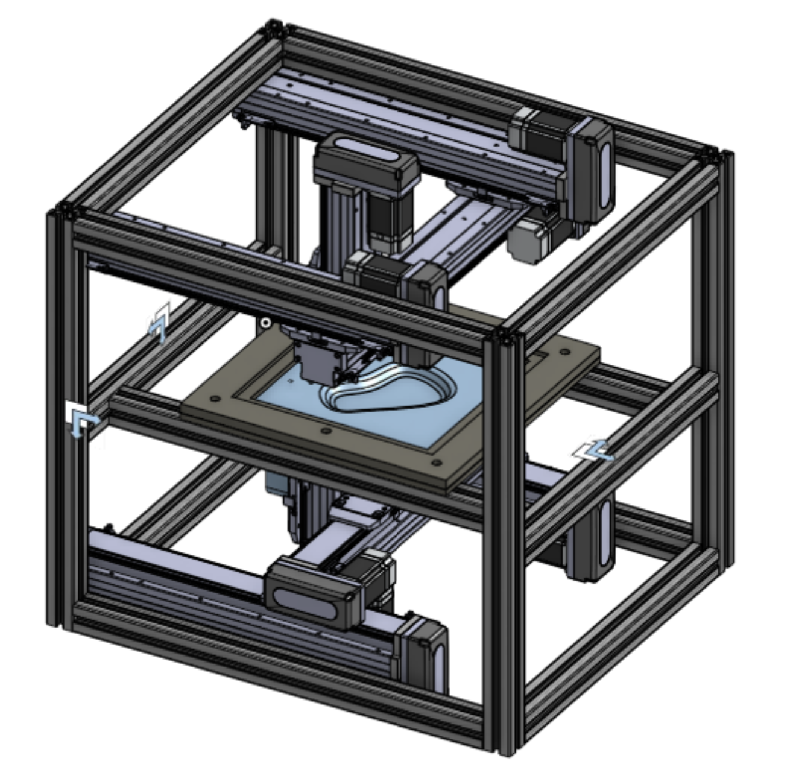

Hi!
We’re happy to see you here. Navigate using the menu above to discover our Double-Sided Incremental Forming machine.
Check out our progress
We’re happy to see you here. Navigate using the menu above to discover our Double-Sided Incremental Forming machine.
Check out our progress